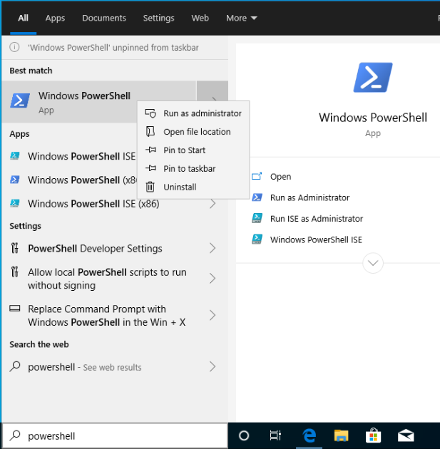
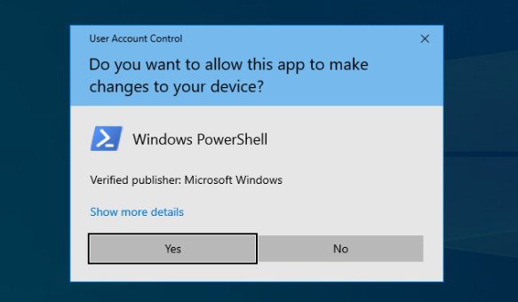
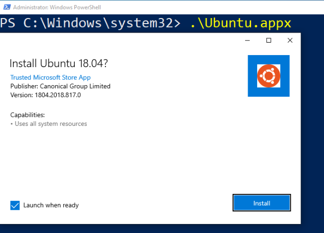
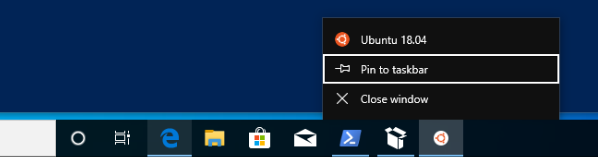
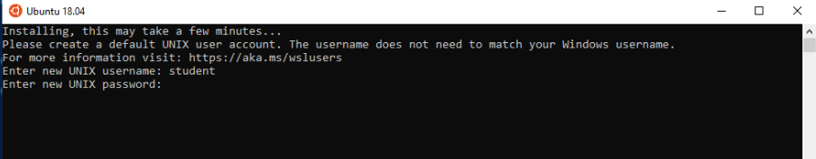
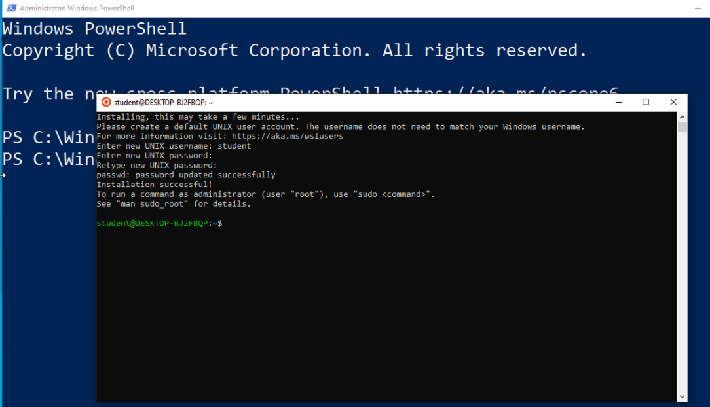

Windows machines can not run Bash natively because of their OS incompatibility. However, Microsoft has released the Windows Subsystem for Linux (WSL) which simulates the Linux Kernel. The WSL is a type of Virtual Machine (VM) which, as the name implies, is a virtual computer that runs within a Physical Machine such as your laptop.
Once WSL is enabled you can install a Linux Distribution like Ubuntu and use it as if it were a physical machine. In order to enable WSL and practice in the following chapter you will need to install Ubuntu and Bash through the following steps.
Warning
The WSL is only available for machines running Windows 10. Specifically you must be on Version 2004, Build 19041 or higher. You can check what version you are on by following the instructions in this article.
The first step requires you to open the PowerShell Terminal in admin mode. You can find PowerShell by searching from your taskbar.
Tip
Before opening it right-click the icon and select pin to taskbar so it is easier to reach in the future:
From your taskbar right-click on the pinned icon and select run as administrator:

Opening PowerShell normally will open it with User privileges with security restrictions. When you run a Shell as an admin you have elevated privileges that allow you to control the OS without restriction. In order to enable WSL we will need these elevated privileges.
Warning
When operating a Shell with admin privileges you must be careful with the actions you take. While it is unlikely, you can do irreparable damage from the command-line by controlling areas of your machine that the Desktop GUI would normally prevent you from accessing.
All of the instructions provided in this class are safe as long as you follow them exactly. While we encourage you to research and practice outside of class we can not help you with anything harmful you do to your machine when straying from the directions we provide. Use common sense and don’t run scripts or commands you find on the internet without knowing exactly what they do!
You will be prompted to confirm this decision as a security measure:
With PowerShell open as an admin copy and paste the following commands. Recall that the > symbol is used to designate a single PowerShell command (the contents to the right of it) that you need to copy and paste into your Terminal.
> dism.exe /online /enable-feature /featurename:Microsoft-Windows-Subsystem-Linux /all /norestart
This command will invoke the Deployment Image Servicing and Management (dism) tool to enable the WSL feature. Once it has finished you need to restart your machine before continuing to the following steps.
Next enter the following commands to install Ubuntu (the 18.04 LTS version). As a reminder, each line beginning with > is its own command:
# download the Ubuntu OS installer and save it as Ubuntu.appx
> Invoke-WebRequest -Uri https://aka.ms/wsl-ubuntu-1804 -OutFile Ubuntu.appx -UseBasicParsing
# execute the Ubuntu installer application file
> .\Ubuntu.appx
A dialog box will ask you to confirm the installation:
The Ubuntu VM should now open automatically. It will then take a few minutes to complete the installation.
Note
If you have any issues with the installation you likely forgot to restart your machine after enabling WSL. For resolving other issues refer to this troubleshooting article.
While waiting for it to install right click on its icon and pin it to your taskbar:
After installation it will prompt you to enter a username and password for your Ubuntu user account:
You can set up any number of VMs and customize them to your needs. However, for this class we will use the following values to make troubleshooting and helping you more consistent.
Note
When pasting or typing the password the characters will be hidden. Make sure to use these exact values:
studentlaunchcodeYou will then be presented with Bash running on the Ubuntu Terminal!
As you likely noticed, this version of Ubuntu is headless meaning it only includes a Terminal GUI running Bash. While Ubuntu also comes in a Desktop edition with the full GUI Shell it is only used for consumers. When working with Linux VMs in the cloud we will always use headless OS installations and work exclusively from the Terminal. We will first get some practice with a local VM before venturing into remote VMs in the cloud.
When you want to close the Ubuntu VM just type exit into the prompt. The exit command exits the active Shell process. While this appears to shut down Ubuntu, WSL will continue to run the VM in the background so that it starts up quickly the next time you need it.
You can practice this now by entering the following command:
$ exit
To re-open Ubuntu just select the taskbar icon that you pinned earlier.
WSL is designed to manage any number of VMs. Each VM uses a system image which contains the OS files used by the virtual machine. In the context of Linux, WSL refers to these images as distributions.
You can view the available WSL distributions installed on your machine by using the --list option:
# list all the installed VM distributions
> wsl --list
# list just the running VMs
> wsl --list --running
You can also enter the Shell of the VM directly from the PowerShell Terminal rather than using the Ubuntu Terminal GUI. This feature is convenient as it does not require you switch between application windows.
You can use the --distribution option followed by the name of the VM’s distribution (one that is installed from the --list output) to enter the Shell directly:
# start the machine in the PowerShell Terminal (instead of using the taskbar icon)
> wsl --distribution Ubuntu-18.04
# shorthand -d
> wsl -d Ubuntu-18.04
The same concept of using the Bash exit command applies but will now return you to the PowerShell Terminal instead of closing the Ubuntu Terminal application.
Note
When entering Bash through PowerShell rather than the Ubuntu taskbar icon it will open to a different starting directory like /mnt/c/Users/<username>. This is not the home directory but is a default when entering through PowerShell.
This behavior can be changed by creating a .bash_profile file. You can read more about it in this article but it falls outside of the scope of this class.
In some cases you want to completely shut down a VM rather than just exiting the active Shell session. For example, you may find that your computer is running slow and want to free up some memory. Unless you need to free up resources it is fine to leave the Ubuntu VM running in the background.
You can shut down a VM from the PowerShell Terminal by using the --terminate option followed by the name of the VM’s distribution (Ubuntu-18.04):
# shut down the machine
> wsl --terminate Ubuntu-18.04
# shorthand -t
> wsl -t Ubuntu-18.04